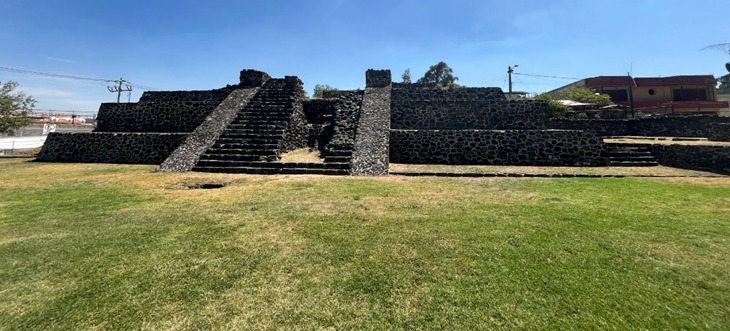
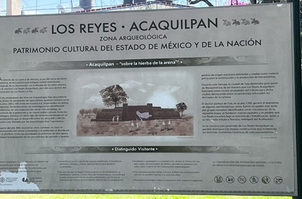
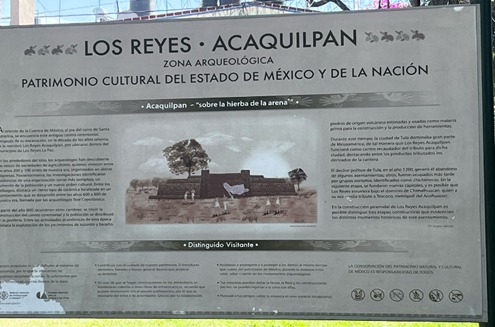

La zona arqueológica de Los Reyes La Paz es un importante yacimiento piramidal situado en el extremo oriental de Ciudad de México. Está a unos 20 minutos a pie de la estación de metro Los Reyes, en el Estado de México
La Zona Arqueológica de Los Reyes La Paz, ubicada en el Estado de México, alberga una notable pirámide que destaca por varias características distintivas. A diferencia de la mayoría de las pirámides mesoamericanas, que suelen estar orientadas hacia el este, la pirámide de Los Reyes La Paz está orientada al poniente. Esta particularidad sugiere que pudo haber estado dedicada a Huitzilopochtli, el dios mexica de la guerra y el sol.
Los continuos avances de los pueblos de habla Nahua resultaron en la consolidación de Azcapotzalco, Tenayuca, Cuautitlán, Texcoco y Chalco alrededor de principios del siglo XV. Los Reyes pagaba entonces, con toda probabilidad, tributo a Chimalhuacán, que a su vez era dependiente de Texcoco. La ciudad resultante contaba con varios cientos de habitantes en su apogeo. Es probable que se dedicaran principalmente a la extracción de piedra basáltica utilizada para la construcción, aunque sin duda también pescaban. El sitio fue abandonado casi por completo con la invasión española. Los visitantes ven hoy en día la gran base con una pirámide de tres cuerpos escalonados. Estos se construyeron en tres etapas entre 1100-1200 e.c. y de nuevo antes de 1521.
La pirámide es una de las pocas orientadas al oeste, por lo que es probable que esté asociada a Huitzilopochtli, la deidad del sol.
La pirámide consta de un basamento con tres cuerpos escalonados, construidos en etapas que abarcan desde el Posclásico Temprano (1100-1200 d.C.) hasta el Posclásico Tardío (1200-1521 d.C.).
 

Para mas informacion puedes consultar este link.
regresar al inicio